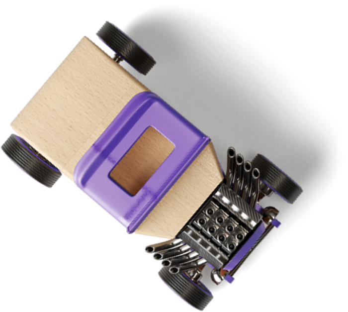

We are the best company ever
Why are we special

Some very good reason will be shown here. So you have to believe me.
The long barrow was built on land previously inhabited in the Mesolithic period. It consisted of a sub-rectangular earthen tumulus, estimated to have been 15 metres (50 feet) in length, with a chamber built from sarsen megaliths on its eastern end.
News
Animals
This is my Teaser Headline
For athletes, high altitude produces two contradictory effects on performance. For explosive events (sprints up to 400 metres, long jump, triple jump) the reduction in
[...]
[...]
Who we are!
 Jacob Jones
HVAC Technician
Jacob Jones
HVAC Technician
 Esther Howard
Video Editor
[...]
Esther Howard
Video Editor
[...]